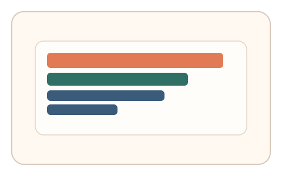
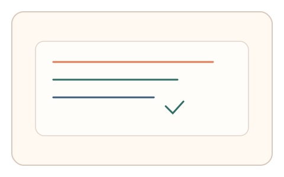

#51
视觉思考范式：扫描/错觉/全局-局部
已扩展
阅读路径偏好
在结构化布局中标出最先扫到的关键块，利用阅读扫描路径偏好验证真实性。
概念原文
给出类文本/结构化布局，要求用户快速标出“你最先扫到的两个关键块”；记录路径是否呈现典型阅读扫描结构（如 F‑型、Z‑型）。
验证“视觉扫描策略”而非具体内容理解。
研究背景
阅读或浏览布局时，人类常呈现典型扫描路径（如 F 型、Z 型），并在关键块上形成停留。记录首扫路径与停留顺序可形成稳定的视觉策略特征。
核心机制
- 展示类似文本的结构化布局。
- 用户标出最先扫到的两个关键块。
- 记录路径顺序与停留时间。
- 分析是否符合典型扫描结构。
用户流程
- 步骤 1：用户看到结构化布局。
- 步骤 2：用户选择最先扫到的关键块。
- 步骤 3：系统分析扫描路径并判定。
判定信号
首扫路径结构
阅读扫描通常呈现稳定的路径模式。
停留顺序与停留时长
真实扫描会在关键块上产生停留。
判定逻辑
结合路径结构与停留时序判定；路径过度随机或过度机械判异常。
对抗面
- 脚本固定点击预设位置
- 重放真实用户的点击序列
防御与缓解
- 随机化布局结构与块大小
- 引入扰动元素减少模板化路径
- 叠加鼠标轨迹与微时序信号进行多信号判定
可达性与风险
提供更简单布局或键盘选择模式，避免对阅读困难用户造成负担。
- 文化与阅读习惯差异影响路径
- 小屏设备改变扫描模式
可视化状态

状态 1：结构化布局
模拟文本与模块布局。
状态 2：路径选择
标出最先扫到的关键块。

状态 3：路径判定
分析扫描结构与停留顺序。
参考资料
Eye tracking
说明阅读路径与注视分析方法。
Saccade
说明扫视与停留行为基础。